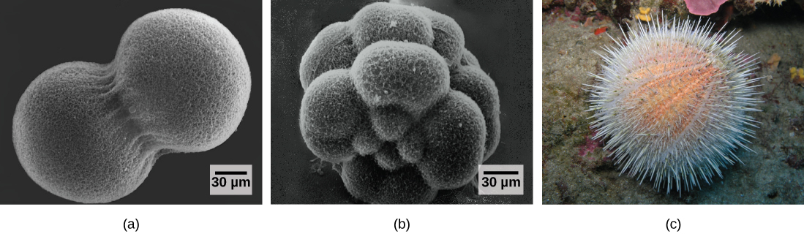
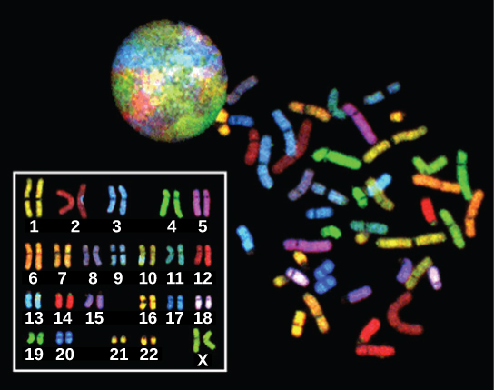
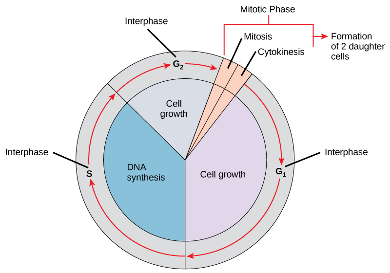
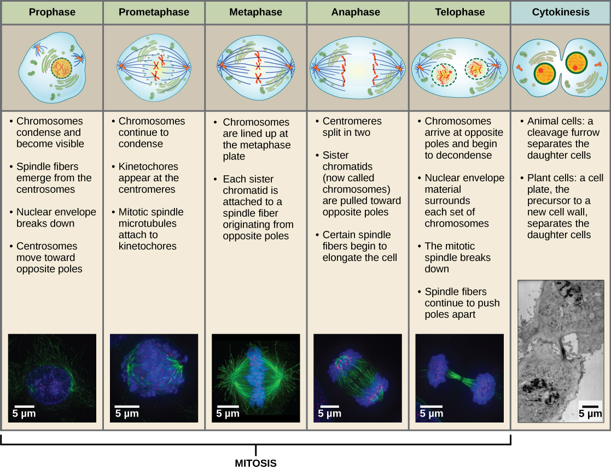
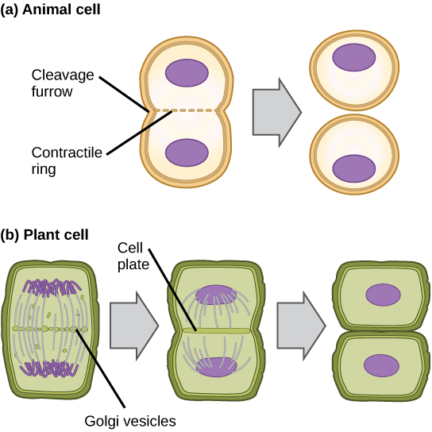
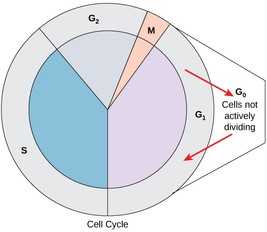
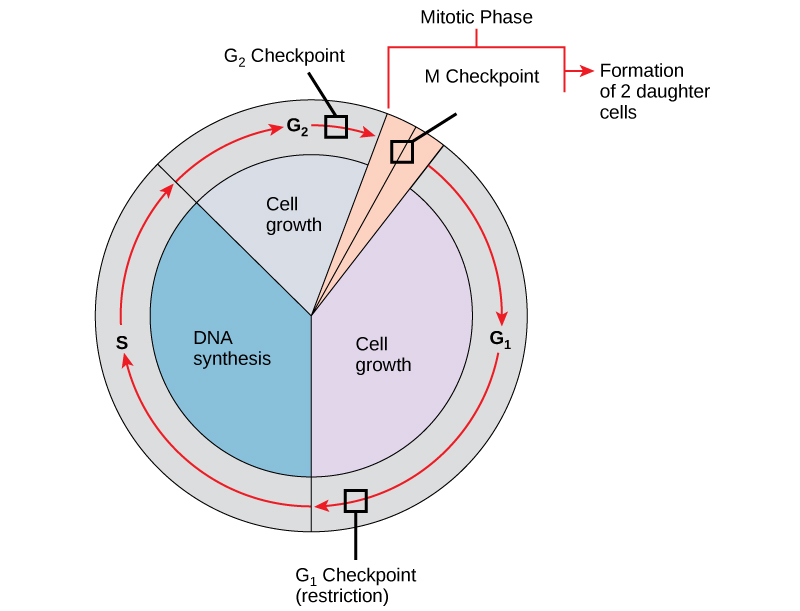
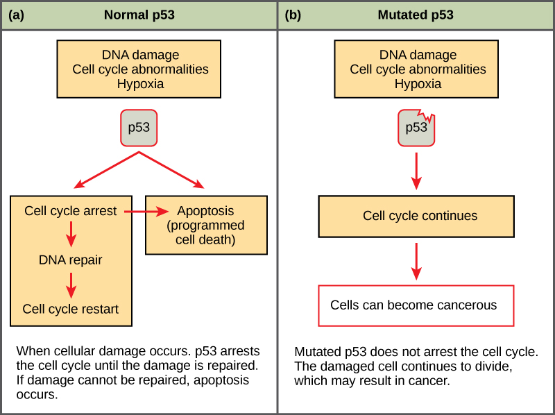
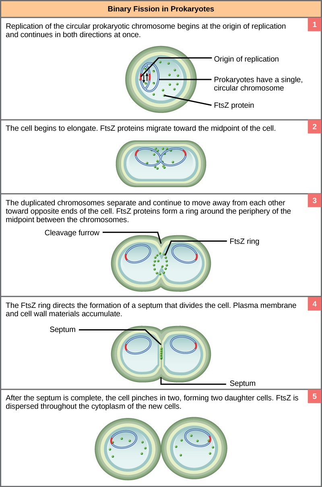

The individual sexually reproducing organism — including humans — begins life as a fertilized egg, or zygote. Trillions of cell divisions subsequently occur in a controlled manner to produce a complex, multicellular human. In other words, that original single cell was the ancestor of every other cell in the body. Once a human individual is fully grown, cell reproduction is still necessary to repair or regenerate tissues. For example, new blood and skin cells are constantly being produced. All multicellular organisms use cell division for growth, and in most cases, the maintenance and repair of cells and tissues. Single-celled organisms use cell division as their method of reproduction.
- Describe the prokaryotic and eukaryotic genome
- Distinguish between chromosomes, genes, and traits
- Describe the three stages of interphase
- Discuss the behavior of chromosomes during mitosis
- Explain how the cytoplasmic content divides during cytokinesis
- Define the quiescent G0 phase
- Explain how the three internal control checkpoints occur
- Explain how cancer is caused by uncontrolled cell division
- Describe the process of binary fission in prokaryotes
| # | Lesson | Key Concepts | Source |
|---|---|---|---|
| 1 | The Genome | Genomic DNA, chromosomes, genes, traits, diploid, haploid, homologous chromosomes, karyotype | CB 6.1 |
| 2 | Interphase | G1, S, G2 phases, DNA replication, sister chromatids, centrosome duplication | CB 6.2 |
| 3 | Mitosis & Cytokinesis | Prophase, prometaphase, metaphase, anaphase, telophase, cleavage furrow, cell plate, G0 phase | CB 6.2 |
| 4 | Cell Cycle Control & Cancer | G1/G2/M checkpoints, proto-oncogenes, tumor suppressors, p53, RB1 | CB 6.2–6.3 |
| 5 | Prokaryotic Cell Division | Binary fission, FtsZ protein, tubulin homology, mitotic spindle evolution | CB 6.4 |
| 6 | Unit Review & Practice Test | All topics — 20-question comprehensive assessment | All |
| Standard | Description | Lessons |
|---|---|---|
| BIO.5a | Cell growth and division | 2, 3 |
| BIO.5b | The cell cycle and its regulation | 2, 3, 4 |
| BIO.5c | Chromosomes, genes, and DNA | 1 |
| BIO.5d | Cancer as uncontrolled cell growth | 4 |
- Describe the prokaryotic and eukaryotic genome
- Distinguish between chromosomes, genes, and traits
The continuity of life from one cell to another has its foundation in the reproduction of cells by way of the cell cycle. The cell cycle is an orderly sequence of events in the life of a cell from the division of a single parent cell to produce two new daughter cells, to the subsequent division of those daughter cells. The mechanisms involved in the cell cycle are highly conserved across eukaryotes. Organisms as diverse as protists, plants, and animals employ similar steps.
Before discussing the steps a cell undertakes to replicate, a deeper understanding of the structure and function of a cell's genetic information is necessary. A cell's complete complement of DNA is called its genome. In prokaryotes, the genome is composed of a single, double-stranded DNA molecule in the form of a loop or circle. The region in the cell containing this genetic material is called a nucleoid. Some prokaryotes also have smaller loops of DNA called plasmids that are not essential for normal growth.
In eukaryotes, the genome comprises several double-stranded, linear DNA molecules (Figure 6.2) bound with proteins to form complexes called chromosomes. Each species of eukaryote has a characteristic number of chromosomes in the nuclei of its cells. Human body cells (somatic cells) have 46 chromosomes. A somatic cell contains two matched sets of chromosomes, a configuration known as diploid. The letter n is used to represent a single set of chromosomes; therefore a diploid organism is designated 2n. Human cells that contain one set of 23 chromosomes are called gametes, or sex cells; these eggs and sperm are designated n, or haploid.

The matched pairs of chromosomes in a diploid organism are called homologous chromosomes. Homologous chromosomes are the same length and have specific nucleotide segments called genes in exactly the same location, or locus. Genes, the functional units of chromosomes, determine specific characteristics by coding for specific proteins. Traits are the different forms of a characteristic. For example, the shape of earlobes is a characteristic with traits of free or attached.
Each copy of the homologous pair of chromosomes originates from a different parent; therefore, the copies of each of the genes themselves may not be identical. The variation of individuals within a species is caused by the specific combination of the genes inherited from both parents. For example, there are three possible gene sequences on the human chromosome that codes for blood type: sequence A, sequence B, and sequence O. Because all diploid human cells have two copies of the chromosome that determines blood type, the blood type (the trait) is determined by which two versions of the marker gene are inherited. It is possible to have two copies of the same gene sequence, one on each homologous chromosome (for example, AA, BB, or OO), or two different sequences, such as AB.
Minor variations in traits such as those for blood type, eye color, and height contribute to the natural variation found within a species. The sex chromosomes, X and Y, are the single exception to the rule of homologous chromosomes; other than a small amount of homology that is necessary to reliably produce gametes, the genes found on the X and Y chromosomes are not the same.
Explain the difference between a gene, a chromosome, and a genome. How do homologous chromosomes relate to the concept of diploid cells? Use the blood type example to illustrate how two copies of a gene can lead to different traits.
- Describe the three stages of interphase
- Explain DNA replication and sister chromatid formation
- Describe the role of the centrosome
The cell cycle is an ordered series of events involving cell growth and cell division that produces two new daughter cells. Cells on the path to cell division proceed through a series of precisely timed and carefully regulated stages of growth, DNA replication, and division that produce two genetically identical cells. The cell cycle has two major phases: interphase and the mitotic phase (Figure 6.3). During interphase, the cell grows and DNA is replicated. During the mitotic phase, the replicated DNA and cytoplasmic contents are separated and the cell divides.

During interphase, the cell undergoes normal processes while also preparing for cell division. For a cell to move from interphase to the mitotic phase, many internal and external conditions must be met. The three stages of interphase are called G1, S, and G2.
The first stage of interphase is called the G1 phase, or first gap, because little change is visible. However, during the G1 stage, the cell is quite active at the biochemical level. The cell is accumulating the building blocks of chromosomal DNA and the associated proteins, as well as accumulating enough energy reserves to complete the task of replicating each chromosome in the nucleus.
Throughout interphase, nuclear DNA remains in a semi-condensed chromatin configuration. In the S phase (synthesis phase), DNA replication results in the formation of two identical copies of each chromosome — sister chromatids — that are firmly attached at the centromere region. At this stage, each chromosome is made of two sister chromatids and is a duplicated chromosome. The centrosome is duplicated during the S phase. The two centrosomes will give rise to the mitotic spindle, the apparatus that orchestrates the movement of chromosomes during mitosis. The centrosome consists of a pair of rod-like centrioles at right angles to each other. Centrioles help organize cell division. Centrioles are not present in the centrosomes of many eukaryotic species, such as plants and most fungi.
In the G2 phase, or second gap, the cell replenishes its energy stores and synthesizes the proteins necessary for chromosome manipulation. Some cell organelles are duplicated, and the cytoskeleton is dismantled to provide resources for the mitotic spindle. There may be additional cell growth during G2. The final preparations for the mitotic phase must be completed before the cell is able to enter the first stage of mitosis.
Describe what happens during each of the three stages of interphase (G1, S, G2). Why is S phase critical for cell division? What would happen if DNA replication did not occur before a cell divided?
- Discuss the behavior of chromosomes during mitosis
- Explain how the cytoplasmic content divides during cytokinesis
- Define the quiescent G0 phase
To make two daughter cells, the contents of the nucleus and the cytoplasm must be divided. The mitotic phase is a multistep process during which the duplicated chromosomes are aligned, separated, and moved to opposite poles of the cell, and then the cell is divided into two new identical daughter cells. The first portion of the mitotic phase, mitosis, is composed of five stages, which accomplish nuclear division. The second portion of the mitotic phase, called cytokinesis, is the physical separation of the cytoplasmic components into two daughter cells.
Mitosis is divided into a series of phases — prophase, prometaphase, metaphase, anaphase, and telophase — that result in the division of the cell nucleus (Figure 6.4).

During prophase, the "first phase," several events must occur to provide access to the chromosomes in the nucleus. The nuclear envelope starts to break into small vesicles, and the Golgi apparatus and endoplasmic reticulum fragment and disperse to the periphery of the cell. The nucleolus disappears. The centrosomes begin to move to opposite poles of the cell. The microtubules that form the basis of the mitotic spindle extend between the centrosomes, pushing them farther apart as the microtubule fibers lengthen. The sister chromatids begin to coil more tightly and become visible under a light microscope.
During prometaphase, many processes that were begun in prophase continue to advance and culminate in the formation of a connection between the chromosomes and cytoskeleton. The remnants of the nuclear envelope disappear. The mitotic spindle continues to develop as more microtubules assemble and stretch across the length of the former nuclear area. Chromosomes become more condensed and visually discrete. Each sister chromatid attaches to spindle microtubules at the centromere via a protein complex called the kinetochore.
During metaphase, all of the chromosomes are aligned in a plane called the metaphase plate, or the equatorial plane, midway between the two poles of the cell. The sister chromatids are still tightly attached to each other. At this time, the chromosomes are maximally condensed.
During anaphase, the sister chromatids at the equatorial plane are split apart at the centromere. Each chromatid, now called a chromosome, is pulled rapidly toward the centrosome to which its microtubule was attached. The cell becomes visibly elongated as the non-kinetochore microtubules slide against each other at the metaphase plate where they overlap.
During telophase, all of the events that set up the duplicated chromosomes for mitosis during the first three phases are reversed. The chromosomes reach the opposite poles and begin to decondense (unravel). The mitotic spindles are broken down into monomers that will be used to assemble cytoskeleton components for each daughter cell. Nuclear envelopes form around chromosomes.
Cytokinesis is the second part of the mitotic phase during which cell division is completed by the physical separation of the cytoplasmic components into two daughter cells. Although the stages of mitosis are similar for most eukaryotes, the process of cytokinesis is quite different for eukaryotes that have cell walls, such as plant cells.
In cells such as animal cells that lack cell walls, cytokinesis begins following the onset of anaphase. A contractile ring composed of actin filaments forms just inside the plasma membrane at the former metaphase plate. The actin filaments pull the equator of the cell inward, forming a fissure. This fissure, or "crack," is called the cleavage furrow. The furrow deepens as the actin ring contracts, and eventually the membrane and cell are cleaved in two (Figure 6.5).
In plant cells, a cleavage furrow is not possible because of the rigid cell walls surrounding the plasma membrane. A new cell wall must form between the daughter cells. During interphase, the Golgi apparatus accumulates enzymes, structural proteins, and glucose molecules prior to breaking up into vesicles and dispersing throughout the dividing cell. During telophase, these Golgi vesicles move on microtubules to collect at the metaphase plate. There, the vesicles fuse from the center toward the cell walls; this structure is called a cell plate. As more vesicles fuse, the cell plate enlarges until it merges with the cell wall at the periphery of the cell. Enzymes use the glucose that has accumulated between the membrane layers to build a new cell wall of cellulose. The Golgi membranes become the plasma membrane on either side of the new cell wall (Figure 6.5).


Not all cells adhere to the classic cell-cycle pattern in which a newly formed daughter cell immediately enters interphase, closely followed by the mitotic phase. Cells in the G0 phase are not actively preparing to divide. The cell is in a quiescent (inactive) stage, having exited the cell cycle. Some cells enter G0 temporarily until an external signal triggers the onset of G1. Other cells that never or rarely divide, such as mature cardiac muscle and nerve cells, remain in G0 permanently (Figure 6.6).
Describe the five stages of mitosis in order. Then compare and contrast cytokinesis in animal cells versus plant cells. Finally, explain why some cells enter G0 phase and give examples.
- Explain how the three internal control checkpoints occur at the end of G1, at the G2–M transition, and during metaphase
- Explain how cancer is caused by uncontrolled cell division
- Understand how proto-oncogenes are normal cell genes that, when mutated, become oncogenes
- Describe how tumor suppressors function to stop the cell cycle
The length of the cell cycle is highly variable even within the cells of an individual organism. In humans, the frequency of cell turnover ranges from a few hours in early embryonic development to an average of two to five days for epithelial cells, or to an entire human lifetime spent in G0 by specialized cells such as cortical neurons or cardiac muscle cells. There is also variation in the time that a cell spends in each phase of the cell cycle. When fast-dividing mammalian cells are grown in culture (outside the body under optimal growing conditions), the length of the cycle is approximately 24 hours. In rapidly dividing human cells with a 24-hour cell cycle, the G1 phase lasts approximately 11 hours. The timing of events in the cell cycle is controlled by mechanisms that are both internal and external to the cell.
It is essential that daughter cells be exact duplicates of the parent cell. Mistakes in the duplication or distribution of the chromosomes lead to mutations that may be passed forward to every new cell produced from the abnormal cell. To prevent a compromised cell from continuing to divide, there are internal control mechanisms that operate at three main cell cycle checkpoints at which the cell cycle can be stopped until conditions are favorable. These checkpoints occur near the end of G1, at the G2–M transition, and during metaphase (Figure 6.7).

The G1 checkpoint determines whether all conditions are favorable for cell division to proceed. The G1 checkpoint, also called the restriction point, is the point at which the cell irreversibly commits to the cell-division process. In addition to adequate reserves and cell size, there is a check for damage to the genomic DNA at the G1 checkpoint. A cell that does not meet all the requirements will not be released into the S phase.
The G2 checkpoint bars the entry to the mitotic phase if certain conditions are not met. As in the G1 checkpoint, cell size and protein reserves are assessed. However, the most important role of the G2 checkpoint is to ensure that all of the chromosomes have been replicated and that the replicated DNA is not damaged.
The M checkpoint occurs near the end of the metaphase stage of mitosis. The M checkpoint is also known as the spindle checkpoint because it determines if all the sister chromatids are correctly attached to the spindle microtubules. Because the separation of the sister chromatids during anaphase is an irreversible step, the cycle will not proceed until the kinetochores of each pair of sister chromatids are firmly anchored to spindle fibers arising from opposite poles of the cell.
Cancer is a collective name for many different diseases caused by a common mechanism: uncontrolled cell division. Despite the redundancy and overlapping levels of cell-cycle control, errors occur. One of the critical processes monitored by the cell-cycle checkpoint surveillance mechanism is the proper replication of DNA during the S phase. Even when all of the cell-cycle controls are fully functional, a small percentage of replication errors (mutations) will be passed on to the daughter cells. If one of these changes to the DNA nucleotide sequence occurs within a gene, a gene mutation results. All cancers begin when a gene mutation gives rise to a faulty protein that participates in the process of cell reproduction. The change in the cell that results from the malformed protein may be minor. Even minor mistakes, however, may allow subsequent mistakes to occur more readily. Over and over, small, uncorrected errors are passed from parent cell to daughter cells and accumulate as each generation of cells produces more non-functional proteins from uncorrected DNA damage. Eventually, the pace of the cell cycle speeds up as the effectiveness of the control and repair mechanisms decreases. Uncontrolled growth of the mutated cells outpaces the growth of normal cells in the area, and a tumor can result.
The genes that code for the positive cell-cycle regulators are called proto-oncogenes. Proto-oncogenes are normal genes that, when mutated, become oncogenes — genes that cause a cell to become cancerous. Consider what might happen to the cell cycle in a cell with a recently acquired oncogene. In most instances, the alteration of the DNA sequence will result in a less functional (or non-functional) protein. The result is detrimental to the cell and will likely prevent the cell from completing the cell cycle; however, the organism is not harmed because the mutation will not be carried forward. If a cell cannot reproduce, the mutation is not propagated and the damage is minimal. Occasionally, however, a gene mutation causes a change that increases the activity of a positive regulator. For example, a mutation that allows Cdk, a protein involved in cell-cycle regulation, to be activated before it should be could push the cell cycle past a checkpoint before all of the required conditions are met. If the resulting daughter cells are too damaged to undertake further cell divisions, the mutation would not be propagated and no harm comes to the organism. However, if the atypical daughter cells are able to divide further, the subsequent generation of cells will likely accumulate even more mutations, some possibly in additional genes that regulate the cell cycle.
The Cdk example is only one of many genes that are considered proto-oncogenes. In addition to the cell-cycle regulatory proteins, any protein that influences the cycle can be altered in such a way as to override cell-cycle checkpoints. Once a proto-oncogene has been altered such that there is an increase in the rate of the cell cycle, it is then called an oncogene.
Like proto-oncogenes, many of the negative cell-cycle regulatory proteins were discovered in cells that had become cancerous. Tumor suppressor genes are genes that code for the negative regulator proteins, the type of regulator that — when activated — can prevent the cell from undergoing uncontrolled division. The collective function of the best-understood tumor suppressor gene proteins, retinoblastoma protein (RB1), p53, and p21, is to put up a roadblock to cell-cycle progress until certain events are completed. A cell that carries a mutated form of a negative regulator might not be able to halt the cell cycle if there is a problem.
Mutated p53 genes have been identified in more than half of all human tumor cells. This discovery is not surprising in light of the multiple roles that the p53 protein plays at the G1 checkpoint. The p53 protein activates other genes whose products halt the cell cycle (allowing time for DNA repair), activates genes whose products participate in DNA repair, or activates genes that initiate cell death when DNA damage cannot be repaired. A damaged p53 gene can result in the cell behaving as if there are no mutations (Figure 6.8). This allows cells to divide, propagating the mutation in daughter cells and allowing the accumulation of new mutations. In addition, the damaged version of p53 found in cancer cells cannot trigger cell death.

Since cancer is defined by uncontrolled cell growth, cancer treatments aim to interrupt the cell cycle. One of the first treatments involved folic acid, a substance discovered by Lucy Wills while she was researching pregnancy anemia (blood disorder). Several scientists showed that inhibiting folic acid uptake by tumor cells resulted in reduced growth. Jane C. Wright identified the drug now known as methotrexate as an effective treatment for breast and skin cancers. The same drug was applied to other cancers, such as placental, uterine, and lung cancers. Methotrexate is known as the first chemotherapy drug, and Wright's additional work to establish dosage protocols and sequences — both to maximize the effect and manage side effects — laid the foundation for contemporary chemotherapy treatments.
Explain the difference between a proto-oncogene and a tumor suppressor gene. How does a mutation in p53 contribute to cancer development? Why is it significant that mutated p53 has been found in more than half of all human tumor cells?
- Describe the process of binary fission in prokaryotes
- Explain how FtsZ and tubulin proteins are examples of homology
Prokaryotes such as bacteria propagate by binary fission. For unicellular organisms, cell division is the only method to produce new individuals. In both prokaryotic and eukaryotic cells, the outcome of cell reproduction is a pair of daughter cells that are genetically identical to the parent cell. In unicellular organisms, daughter cells are individuals.
To achieve the outcome of identical daughter cells, some steps are essential. The genomic DNA must be replicated and then allocated into the daughter cells; the cytoplasmic contents must also be divided to give both new cells the machinery to sustain life. In bacterial cells, the genome consists of a single, circular DNA chromosome; therefore, the process of cell division is simplified. Mitosis is unnecessary because there is no nucleus or multiple chromosomes. This type of cell division is called binary fission.
The cell division process of prokaryotes, called binary fission, is a less complicated and much quicker process than cell division in eukaryotes. Because of the speed of bacterial cell division, populations of bacteria can grow very rapidly. The single, circular DNA chromosome of bacteria is not enclosed in a nucleus, but instead occupies a specific location, the nucleoid, within the cell. As in eukaryotes, the DNA of the nucleoid is associated with proteins that aid in packaging the molecule into a compact size. The packing proteins of bacteria are, however, related to some of the proteins involved in the chromosome compaction of eukaryotes.
The starting point of replication, the origin, is close to the binding site of the chromosome to the plasma membrane (Figure 6.9). Replication of the DNA is bidirectional — moving away from the origin on both strands of the DNA loop simultaneously. As the new double strands are formed, each origin point moves away from the cell-wall attachment toward opposite ends of the cell. As the cell elongates, the growing membrane aids in the transport of the chromosomes. After the chromosomes have cleared the midpoint of the elongated cell, cytoplasmic separation begins. A septum is formed between the nucleoids from the periphery toward the center of the cell. When the new cell walls are in place, the daughter cells separate.

The precise timing and formation of the mitotic spindle is critical to the success of eukaryotic cell division. Prokaryotic cells, on the other hand, do not undergo mitosis and therefore have no need for a mitotic spindle. However, the FtsZ protein that plays such a vital role in prokaryotic cytokinesis is structurally and functionally very similar to tubulin, the building block of the microtubules that make up the mitotic spindle fibers that are necessary for eukaryotes. The formation of a ring composed of repeating units of a protein called FtsZ directs the partition between the nucleoids in prokaryotes. Formation of the FtsZ ring triggers the accumulation of other proteins that work together to recruit new membrane and cell-wall materials to the site. FtsZ proteins can form filaments, rings, and other three-dimensional structures resembling the way tubulin forms microtubules, centrioles, and various cytoskeleton components. In addition, both FtsZ and tubulin employ the same energy source, GTP (guanosine triphosphate), to rapidly assemble and disassemble complex structures.
FtsZ and tubulin are an example of homology, structures derived from the same evolutionary origins. In this example, FtsZ is presumed to be similar to the ancestor protein to both the modern FtsZ and tubulin. While both proteins are found in extant organisms, tubulin function has evolved and diversified tremendously since the evolution from its FtsZ-like prokaryotic origin. A survey of cell-division machinery in present-day unicellular eukaryotes reveals crucial intermediary steps to the complex mitotic machinery of multicellular eukaryotes (Table 6.1).
Compare and contrast binary fission with mitosis. Why is binary fission simpler and faster? Also explain the evolutionary connection between FtsZ and tubulin — what does this tell us about the origins of cell division?
- The genome (chromosomes, genes, traits, diploid/haploid) — CB 6.1
- Interphase (G1, S, G2 phases) — CB 6.2
- Mitosis and cytokinesis — CB 6.2
- Cell cycle control and cancer — CB 6.2–6.3
- Prokaryotic cell division (binary fission) — CB 6.4